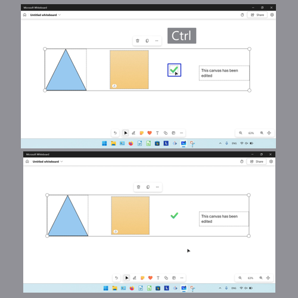

How to Edit Objects in the Microsoft Whiteboard App (Windows 11)
This tutorial covers:
How to Switch to Select Mode:
How to Select an Object:
How to Select Multiple Objects:
How to Add an Object to a Multi Selection:
How to Deselect an Object
How to Remove an Object from a Multi Selection:
No time to scroll down? Click through these tutorial slides:
Watch a tutorial video:
How to Switch to Select Mode With Click
- Step 1: First open a whiteboard. On the bottom toolbar click the “Select” or arrow button.

How to Switch to Select Mode With Keyboard
- Step 1: Open a whiteboard. On the keyboard press Alt + S.
How to Select an Object With Click
- Step 1: First switch to Select mode. Click an object on the canvas.

How to Select an Object With Keyboard
- Step 1: On the keyboard press the Tab key.

- Step 2: Continue pressing Tab until the keyboard focus is on the desired object. Press Enter or Spacebar to select the object.
How to Select Multiple Objects With Shift
- Step 1: First switch to Select mode. Hold the Shift key, then click and drag with the mouse until the blue selection field covers the objects.

How to Select Multiple Objects With Lasso and Click
- Step 1: On the bottom toolbar click the “Inking” button.

- Step 2: In the menu that opens, click the “Lasso select” button.

- Step 3: Click and drag the mouse in a clockwise or counterclockwise direction, until the blue selection field covers the objects.
How to Select Multiple Objects With Lasso and Keyboard
- Step 1: On the keyboard, press Alt + Q to select the Lasso tool.

- Step 2: Click and drag the mouse in a clockwise or counterclockwise direction, until the blue selection field covers the objects.

How to Select Multiple Objects With Keyboard Shortcut
- Step 1: First open a whiteboard template. On the keyboard press Ctrl + A.

How to Add an Object to a Multi Selection With Click
- Step 1: Select multiple objects. Hold the Ctrl key and click an object. Microsoft Whiteboard adds the clicked object to the multi selection.
How to Add an Object to a Multi Selection With Keyboard
- Step 1: First select multiple objects. On the keyboard press the Tab key.

- Step 2: Continue pressing Tab until the keyboard focus is on the desired object. Hold Ctrl, then press Enter or Spacebar to add that object to the multi selection.

How to Deselect an Object With Click
- Step 1: Select an object. Click anywhere on the canvas.
How to Deselect an Object With Keyboard
- Step 1: First select an object. On the keyboard press the Esc key.

How to Remove an Object from a Multi Selection With Click
- Step 1: Select multiple objects. Hold down the Ctrl key, then click the object to remove from the multi selection. 
How to Remove an Object from a Multi Selection With Keyboard
- Step 1: First select multiple objects. On the keyboard press the Tab key.
- Step 2: Continue pressing Tab until the keyboard focus is on the desired object. Hold the Ctrl key, then press Enter or Spacebar to remove the object from the multi selection.
Refer to these instructions later with this free tutorial PDF.